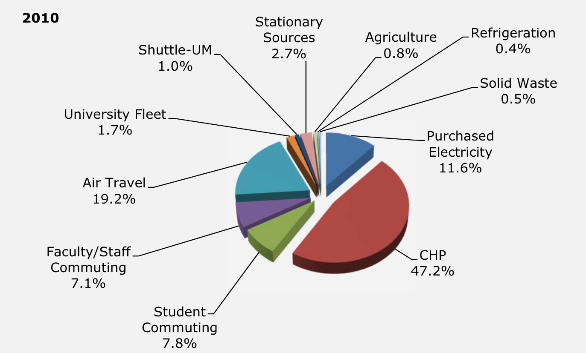

Introduction
The University of Cape Town (UCT) is set on creating an environment which encourages sustainability and is committed to policies and practices that will ensure a contribution towards the bigger picture. UCT signed the Talloires Declaration in 1990 and with that began implementing energy saving policies and using resources to achieve these goals (University of Cape Town, 2014). Such policies inspired students to form the Green Campus Initiative in an effort to be involved in conserving the campus environment.
The most recent international commitment UCT has made is with the Sustainable Campus Charter (ISCN, 2010). This charter provides cooperating institutions with the opportunity of integrating research and sustainable operations to determine the best practices and apply them, while allowing independent goals to be created that are in line with the Charter. Not only does this motivate collaborative work, but also transparency among the institutions.
The Carbon Footprint report focuses on greenhouse gas emissions that are caused by activities (directly or indirectly) and by a product or service over time. Using the global standard Greenhouse Gas (GHG) Protocol for measuring, managing and reporting greenhouse gas emissions (Ghgprotocol.org, 2015). Emissions are expressed in carbon dioxide equivalents (CO2e) and categorised into three scopes, namely:
- Scope 1 - Direct emissions
- Scope 2 - Indirect emissions from purchased electricity, heat or steam
- Scope 3 - Other indirect emissions
Currently, the visualizations often used to represent the findings are pie and bar charts. The pie charts are used to show proportionalities, where each sector of the pie represents a categories from the three scopes. The issue with this is that the data contains many small amounts, which makes it unsuitable for viewing. The bar charts are great for comparisons (current vs. previous year) but fails to effectively represent data that has discrepancies.
The data for this report is retrieved primarily from the Procurement and Payment Services (PPS), with the remaining data from Student Housing and a small number from the different satellite campuses. This is compiled and presented for the ERC, UCT management, PPS, the International Sustainable Campus Network (ISCN) and various UCT staff departments.
Literature Review
Many universities around the world are dedicated towards lowering their carbon emissions. With this goal, it is important that data is collected accurately and displayed correctly in order to determine areas of concern and possible change. With the intention of improving the current state of carbon emission visualizations, we sought out a few institution’s carbon footprints online to see how the data is displayed and how effective it is. The following institutions all use the Greenhouse Gas Protocol when measuring their carbon footprint, thus the current visualizations that they use are worth noting:
The American University in Cairo (AUC)

The graph shows the AUC’s total carbon dioxide equivalent emissions, where the x-axis shows the different categories (in percentages) and the y-axis shows the amount of emissions (in Metric Tons of Carbon Dioxide Equivalent). Comparisons can be made just by looking at the visualization plainly, and the division of each category allows one to see the activities involved and their contribution. Percentages are also added to the divisions which help with queries pertaining to amounts. One issue is that each category can easily become busy if it has many activities involved in it. The second is that there is a discrepancy between the figures, which makes Paper Use, Water Supply and Other seem almost meaningless. Another issue is that all the text and percentages makes the visualization overwhelming. A positive that can be taken away from this visualization is the stacking of individual categories into similar groups.
The University of Maryland
The pie chart gives a breakdown of the total emissions incurred by the University of Maryland. For the activities that contribute less than 10%, the proportionalities are no longer useful; the slices become very thin, making it hard to picture the estimation and possibly writing it off as minor or unnecessary. For example it is not possible to tell the difference between faculty/staff commuting and student commuting pie chart slices. The fact that the pie is 3D does not help to perform visual queries and is not necessary.
Washington University in St. Louis

The Washington University in St. Louis’ pie chart is similar to the University of Maryland, but the slices are arranged according to scopes and it is a 2D perspective. The annotations on the side are somewhat misleading, the keys for the scopes have no relation (or colour) to the pie chart itself and the amount of text makes the visualization quite busy. The colours differentiate well, but there is no fixed key to which they refer to. “Other Scope 1*, 0.2%” is almost non-existent and the lines which refer to slices are hard to see. This is another good example of a pie chart that is difficult to interpret.
The University of Cape Town (UCT)


The two pie charts above are taken from the 2012 and 2013 UCT’s Carbon Footprint reports.
The pie chart representing the data from 2012 has a number of issues. The title of each activity is not placed consistently; some titles reside inside the pie while others have lines directing the viewer to the relevant slice. Most of the activities have percentages that are less than 1%, which makes that data hard to differentiate. A number of activity’s have a 0% contribution, which is not an entirely correct representation of the raw data, making it misleading.
The pie chart from the 2013 year is a 3D pie chart. Again, this interferes with the proportionalities of the pie chart, where a 2D one would have sufficed. Again, many of the activities have percentages below 1%, which makes it difficult to read and interpret them. It is also useful to indicate which activities fall under scope one, two and three respectively for easier querying.
Visual Queries
With the design we are proposing in order to represent data, these are our primary visual queries:
Which scope contributed the most to the total emissions?The first query that is asked when viewing an institution’s total emissions is which scope had the largest impact. This allows the interested parties to immediately recognise which activities are a cause for concern and how they can be adjusted to produce less emissions
Design Description
Initial proposed design
Once the key visual queries were decided on, we proceeded onto designing the visualization. Figure 1 shows the initial design, followed by the rationale behind it:
The inspiration behind this design is taken from the “Mandela’s Descendants” visualization presented in class. Three shades of green are used, where: (1) the darkest green colour shows the context of the kind of information we are dealing with, which in this case is UCT’s carbon footprint, (2) the “normal” green shows the three scopes dealt with in the report and (3) the lighter shade of green shows the different categories. Icons are used to depict the different categories, because the icons quick, easy recognition and text is included to avoid any misinterpretations of the icons.
Relationships are shown using edges: the thickness of an edge gives a comparative estimation of how much each category contributed to each scope, and likewise how much each scope contributed to the total emissions, which makes it easy to answer certain visual queries. The size of each category allows for comparisons to be made along any other category. This is depicted by the height of a category’s box; although this is not a direct translation of the actual figures, it is meant to provide an estimation for comparative purposes.
Details are available on demand for each category, where a click on the box of a category brings up a bar chart that shows the emissions from current year vs. the emissions from the previous year.
Strengths and Weaknesses
A Subheading
Phasellus quam turpis, feugiat sit amet ornare in, a hendrerit in lectus dolore. Praesent semper mod quis eget sed etiam eu ante risus.
Conclusions
A Subheading
Phasellus quam turpis, feugiat sit amet ornare in, a hendrerit in lectus dolore. Praesent semper mod quis eget sed etiam eu ante risus.
References
A Subheading
Phasellus quam turpis, feugiat sit amet ornare in, a hendrerit in lectus dolore. Praesent semper mod quis eget sed etiam eu ante risus.